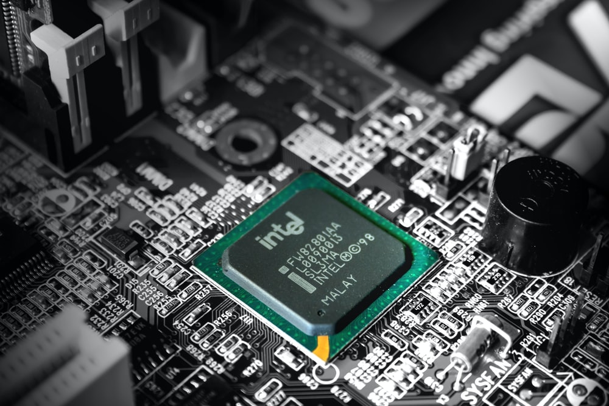

Материнская плата — это "фундамент" всего компьютера. Материнская плата объединяет все внутренности ПК. Так же она соединяет мышку, дисплей, клавиатуру в одну единую систему.
Сокет для установки CPU — разъем для установки процессора на материнской плате.
Слоты PCI и PCI Express — первые из-за своей низкой производительности используют для подключения ТВ-тюнеров, аудио и сетевых карт, а также других устройств, которым достаточно пропускной способности данного интерфейса. PCI Express, как правило, используется для подключения к ПК видеокарт;
Чипсет — это набор микросхем, так называемые северный и южный мосты. Северный мост осуществляет контроль над взаимосвязью между системной платой с ОЗУ, графическим ускорителем, ЦП. А также регулирует быстроту их работы и подсоединяет к южному мосту, который осуществляет контроль над сбережением энергии, BIOS, часами системы, интерфейсами IDE, SATA, USB, LAN, Embeded Audio;
Форм-фактор — параметр определяющий площадь платы, а также места крепления и гнезда для снабжения электропитанием. Основные представители: E-ATX, Micro-ATX, Mini-ITX, Mini-STX, Standard-ATX.